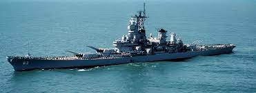
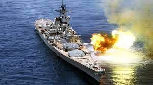

Yamato (大和, lit.'Great Harmony') was the lead ship of her class of battleships
it wasthe heaviest and most powerfully armed battleships ever
it wasconstructed, displacing nearly 72,000 tonnes at full load and armed with nine 46 cm (18.1 in) Type 94 main guns, which were the largest guns ever mounted on a warship.

missouri
USS Missouri (BB-63) is an Iowa-class battleship built for the United States Navy (USN) in the 1940s and is currently a museum ship.
The ship was assigned to the Pacific Theater during World War II
where she participated in the Battles of Iwo Jima and Okinawa and shelled the Japanese home island.
it has been called the most historic battleship in the world.

iowa
The Iowa class was a class of six fast battleships ordered by the United States Navy in 1939 and 1940.
The vessels that eventually became the Iowa-class battleships were born from the US Navy's War Plan Orange, a Pacific war plan against Japan.
Four vessels, Iowa, New Jersey, Missouri, and Wisconsin, were completed; two more, Illinois and Kentucky, were laid down but canceled in 1945 and 1958